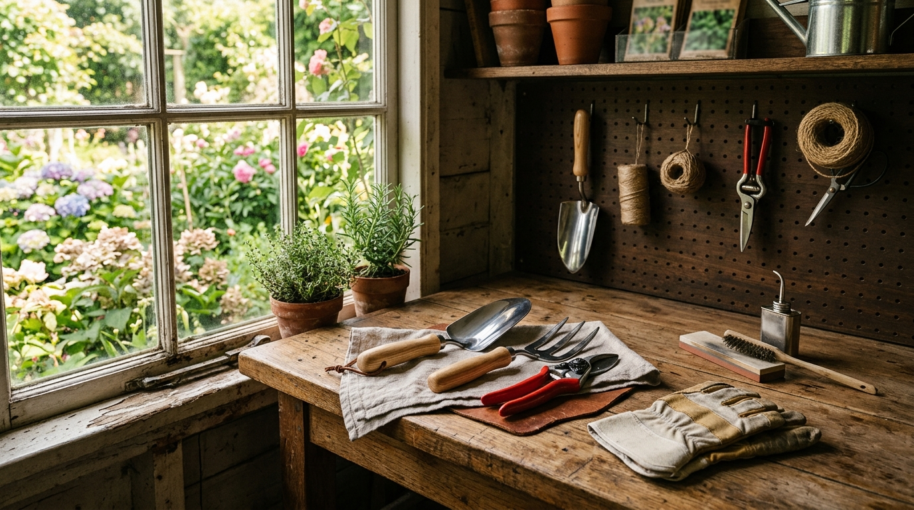
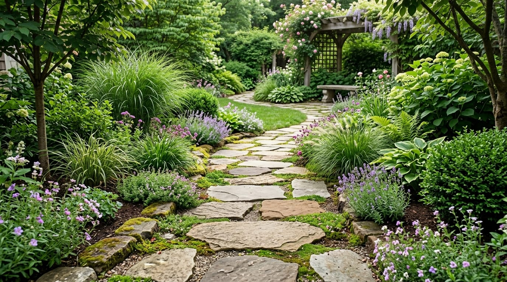
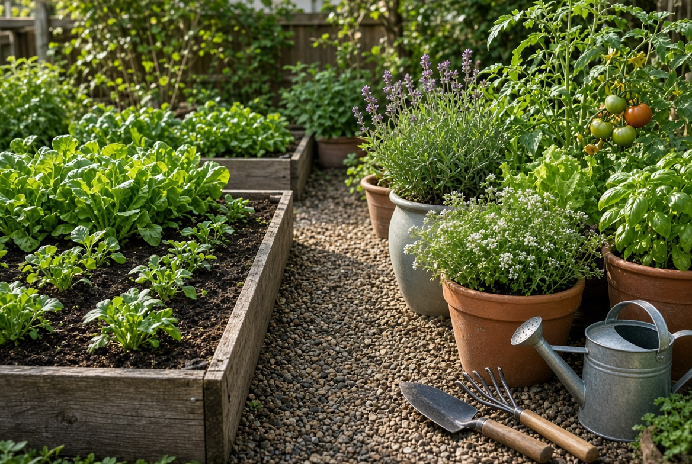

Cómo reutilizar muebles antiguos en casa
Ideas para evaluar, preparar y renovar muebles antiguos sin perder su funcionalidad.
Leer artículo →Proyectos, reparaciones sencillas e ideas creativas para renovar objetos y mejorar diferentes espacios de casa y jardín.

Ideas para evaluar, preparar y renovar muebles antiguos sin perder su funcionalidad.
Leer artículo →
Guía práctica para planificar y construir un camino de piedra integrado con el jardín.
Leer artículo →
Consejos para limpiar, guardar y mantener correctamente herramientas de uso frecuente.
Leer artículo →